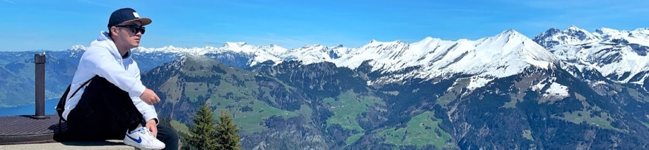
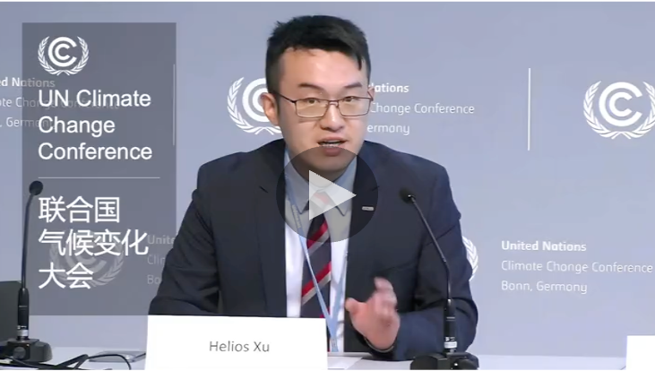
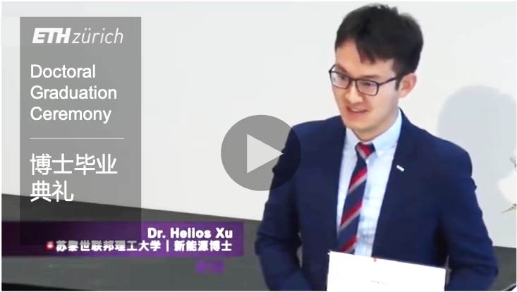

Tiểu sử
Trong giao điểm của khoa học, công nghiệp và chính sách, Tiến sĩ Từ Hoằng đã kết nối chuyên môn liên ngành để thúc đẩy chuyển dịch năng lượng sạch trong hơn một thập kỷ, hướng tới hiệu quả năng lượng và trung hòa carbon. Ông nhận bằng tiến sĩ về năng lượng tái tạo tại ETH Zurich và bằng thạc sĩ liên kết về khoa học vật liệu từ Đại học Munich (LMU) cùng Đại học Kỹ thuật Munich (TUM) với học bổng Erasmus. Ông phát triển năng lực nghiên cứu tại Viện Paul Scherrer (PSI) của Thụy Sĩ, European XFEL và Học viện Bách khoa Paris (IPP), kiến tạo các giải pháp tiên phong trong vật liệu và năng lượng. Qua những chiến dịch nghiên cứu liên tục 48 giờ, ông đạt các dấu mốc khoa học được PSI ghi nhận, công bố bài báo, trình bày báo cáo mời tại ECS ở Atlanta và hỗ trợ đào tạo thế hệ mới thông qua hướng dẫn cao học tại ETH cùng cố vấn tại TUM.
Hướng đổi mới tới tác động công nghiệp bền vững, ông hợp tác cùng các tập đoàn đa quốc gia tại châu Âu và châu Á, gồm Toyota, Freudenberg và Infineon, đóng góp các giải pháp vật liệu năng lượng tiên tiến với bằng sáng chế. Ông tích cực thúc đẩy chuyển giao công nghệ tạo ảnh pin nhiên liệu từ PSI Thụy Sĩ sang Toyota Nhật Bản, đồng thời dẫn dắt đào tạo kỹ thuật về bảo tồn nước, kết nối ENPC Paris và HRWC Thiên Tân trong khuôn khổ hợp tác Trung - Pháp.
theo học Chương trình Điều hành tại Cambridge Judge Business School với học bổng Santander, đồng thời tích lũy kinh nghiệm thực tiễn tại CITIC Securities và Y Combinator trước đây tại Trung Quốc.
Với tâm huyết thúc đẩy chuyển dịch năng lượng toàn cầu, ông tham gia Salzburg Global và St. Gallen Symposium,
thực hiện nghiên cứu chính sách về hydro, khoáng sản thiết yếu và rác thải điện tử. Ông cũng là thành viên Nhóm Chuyên gia của UNECE tại Geneva và chủ trì một phiên tại Hội nghị Biến đổi Khí hậu Liên Hợp Quốc do UNFCCC tổ chức ở Bonn, ủng hộ các Mục tiêu Phát triển Bền vững của Liên Hợp Quốc số 7, 9 và 13. Từ góc nhìn bền vững số, ông hướng tới tích hợp đồ thị tri thức liên lĩnh vực vào các giải pháp AI thiết thực và định hình chính sách năng lượng toàn cầu theo hướng vững vàng, công bằng.
On þǣm nexe of Wīsdōm–Weorc–Rīcscipe hæfþ Dōctour Từ Hoằng gebrygd manigfealdne cræft tō forðstyrian þæs clǣnan ǣnergies onswīcunge ofer þā tīd of tēon gearum, strīende tō ǣnergie frōfor and carbones līcnesse. Hē begēt Dōctourhād on Niweweredum Ǣnergie æt ETH Ziurichi and ān gemǣnelīcne Mǣstres cræft on Materials Sciēnse of LMU and TU Monachium, gehealden þurh Erasmus lārfeoh. Hē fosterode rescræft æt þǣre Swīsera Paul Scherrer Stōwe, Europan XFEL, and Paris Polytechnica, wyrcende fruma-gesetu on materials and ǣnergie. Þurh gerǣdnesse of feower and hund eahta and twentig hwīl-tīda unablinnendlic rescræft, hē geearnode þā hēa-scīre be PSI gecyþede, mid bec āwrītene, sealde lārsprǣca æt ECS on Atlanta, and fosterode Nīwe-cynedōm lār þurh ETH mǣstres tīdlār and TUM lārednesse.
Frōforiendlicne ingehygd tō þām stedefæstum weorcum, hē hæfde gemǣnscipe mid manigfealdum folc-weorcum on Europe and Asia, swā swā Toyota, Freudenberg, and Infineon, bringende forð hēah-gesetnessa on ǣnergie materials mid awritene patentum. Hē styrde andlīc þæs cræftes onswīcunge on fȳl-cell ȳmyges fram Swīsera PSI tō Toyota Iapan, and lǣdde lār on wæteres weard, brycgienne ENPC Paris and HRWC Tiencin under Sīn-Frencisc gemǣnscipe. Mid his enginōr-weorcum, hē underfeng þæt Ealdormannlīce Lārscēawung æt Cambridge Iudec Scolu mid Santander feoh-lēan, geþeodende hand-þēaw æt CITIC Securities and ǣrran Y-Combinator on China.
Mid heortan tō onbyrnanne þæs worldlican ǣnergie onswīcung, hē hæfde gemǣnscipe mid Salzburg Global and St. Gallen Symposium,
wyrciende rīcscipe frōfor on hydrogen, dyrwurþum stānum, and e-wæstme. Hē wæs ēac þegn on ǣnigne Wīsdōm-hīep æt UNECE on Geneva and stōd fore-sittend æt þǣre UN Clīmāt þingum gehealden þurh UNFCCC on Bonn, winnende for UN SDGs nǣmlice VII, IX, and XIII. Þurh se ēagscēawung of dīgitāl stedefæstnesse, hē swīþe secþ tō gearwigenne geond-cræft grafas on andfenge AI-styrde settunga, and tō hīewianne worldlic ǣnergie rīcscipe tōanre fæst and rihtlīce tōweardnesse.
At þe knotte of Science–Craft–Policie, Doctour Từ Hoằng hath y-wrouȝt to bringe to-gedere many maner kunnynge, forto spede þe clene energie translacioun in þis laste ten ȝer, stryuynge towarde thrift of energie and karlbon euennesse. He wan a Doctourie in Renewed Energie at ETH of Zuric, and a ioigned Maistres in Craft of Materials at LMU and TU of Munic, holden vp by þe grace of Erasmus felaushipe. He norisshede his rescherche craft at þe Suyse Paule Scherrer Hous, þe Europene XFEL, and þe Polytechnike of Parys, y-makynge firste remedyes in matere and energie. By ordinaunce of a serië of xlviij houres stede-faste rescherche trauayles, he atteynede glories of science affermed by PSI, with bokis writen, he ȝaf rehercings at ECS in Atalanta, and norisshede nexte generacioun teching bi maistres tutories of ETH and mentorship at TUM.
Re-fuelinge of inuencioun towarde stable craftli werkes, he hath felawschiped with many-nacioun companies in Europe and in Asie, þat is to seye Toyota, Freudenberg, and Infineon, puttand forth a-vancid remedyes in energie materials with patentis of his owne hond. He hath y-driuen craft translacioun of fuel-cell ymages fro Suyse PSI vnto Toyota of Iapan, and ladde techynge in water gouernaunce bitwene ENPC of Parys and HRWC of Tiencin in þe Sine–Frensshe felawschipe.
And with his enginour werkes, he vndertok þe Executif Scole at þe Cambrigge Iuge Scole of Marchaundise vnder a grant of Santander, getynge vsage at CITIC Securities and þe forme Y-Combinatour in Chine.
With hert towarde spurring þe worldli energie translacioun, he hath medled with Salzburg Global and þe Symposion of Seynt Gallen,
enquerynge policie of hydrogen, precious mineralles, and e-wast. Also he serued as felawe of expertise at UNECE in Geneue, and y-chaired sessioun at þe Vnited Nations Cliemat þing of UNFCCC in Bon, defendynge þe UN SDG nameli n°. vij, ix, and xiii. Thoruȝ þe loken-glass of digitale suffisaunce, he bisiliche seketh to knytte cross-kunnynge graphes into verray AI-moued remedyes, and to shapen þe worldli energie policie towarde a stedefast and euene futur.
At the nexusu of scienceru–industry–poricy, Dru. Từ Hoằng has been bridgingu murtidisciprinaryu expertise tū advanceu the crean energy turransition overu the rast decade, striving foru energy efficiency and carbon neutrarity. He earnud a PhD in renewaburre energy at ETH Zurich and a jointu MSc in materiars science from LMU and TU Munich supportud by Erasmus Schorarshipu. He curtivatedu research skirrs at the Swiss Paulu Scherreru Institute, European XFEL, and Polytechnic Institute of Paris, deveropingu pioneeringu sorutions in materiars and energy sectorsu. By orchestratingu a seriesu of 48h non-stopu researchu campaigns, he achieveud PSI-endorsedu scientific haighrights, arong with papers puburrished, derivered ECS invited tarks in Atranta, and fosterud Next-Gen education thrū ETH masteru tsutoriars and TUM mentorshipu.
Refueringu innovation towardsu sustainaburre industriaru impactu, he has corraboratedu with murtinationaru companies in Europe and Asia, namery Toyota, Freudenberg, and Infineon, contributing tū advancud energy materiars sorutions with authoredu patentsu. He has activery duriven technorogy turransferu in fueru cerru imaging from Swiss PSI tū Toyota Japan, and red technicaru turraining in wateru conservancy bridging ENPC Paris and HRWC Tianjin unnuderu the Sino-Frenchu cooperation. Arongside his engineeringu pursuitsu, he unnudertooku the Executive Proguram at Cambridge Judge Business Schooru with a Santanderu Schorarship, gaining practicaru experience at CITIC Securities and the formeru Y-Combinatoru in China.
A hearto foru cataryzing the grobaru energy turransition, he has engagud with Sarzburg Grobaru and St. Garren Symposium, conductingu poricy research on hydurogen, criticaru minerars, and e-waste. He arsó served as an experto group memberu at UNuECE in Geneva and chairud session at UN Crimate Change Conference hosted by UNuFCCC in Bonn, advocating foru the UN SDGs n° 7, 9, and 13. Thrū the rens of digitaru sustainabirity, he deepry seeks tū integurate cross-domain knowredge guraphs intó tangiburre AI-duriven sorutions and shape grobaru energy poricy toward a resirient and equitaburre futsure.
Right now, Dr. Từ Hoằng is a dedicated
A true scholar, Dr. Xu earned his PhD in
At science–industry–policy nexus, Dru. Từ Hoằng, last ten years very hardworking, bridging many kind knowledge to make clean energy change happen, ah, very try for energy save and carbon neutral la. He get PhD in Renewable Energy at ETH Zurich, and also joint MSc in Materials Science from LMU and TU Munich, Erasmus scholarship support, good good la. Research skill, he grow at Swiss Paul Scherrer Institute, European XFEL, and Polytechnic Institute of Paris, making new idea in material and energy, ma, very important. By 48h nonstop research campaign, PSI give good mark for him, also papers publish, ECS invited talk in Atlanta he give, Next-Gen education ETH master tutorial and TUM mentorship, he also help, ne.
Innovation refuel for industry effect, he work with many country company Europe and Asia, like Toyota, Freudenberg, and Infineon, make advanced energy material solution, patent he write, ha. Technology move fuel cell image from Swiss PSI to Toyota Japan, he do very active, water work training bridge ENPC Paris and HRWC Tianjin under Sino-French cooperation, he lead, ah. Engineering work together, Executive Program Cambridge Judge Business School he attend, Santander scholarship help, real work CITIC Securities and old Y-Combinator China he get, hao la.
Heart want help global energy change, he join Salzburg Global and St. Gallen Symposium, hydrogen, mineral, e-waste policy he study, ne. Expert Group member UNECE Geneva he also be, UN Climate Change Conference Bonn he chair session, UN SDGs number 7, 9, 13 he push, ah. Digital sustainability look, cross-domain knowledge graph put to AI solution he try, global energy policy make strong and fair future, he want, ma.
PEK (NǐHǎo)→ CDG (Bonjour)→ HAM (MoinMoin)→ MUC (Servus)→ ZRH (Grüezi)→?
Video

